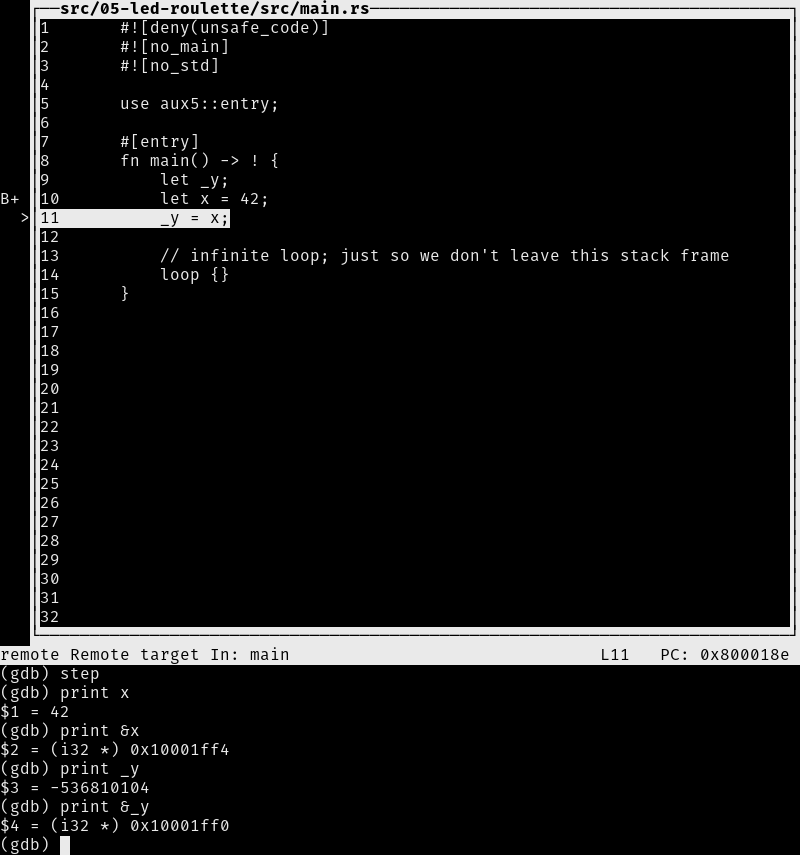
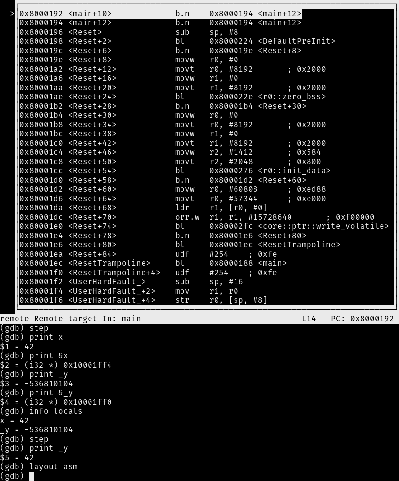

Debug it
We are already inside a debugging session so let's debug our program.
After the load command, our program is stopped at its entry point. This is indicated by the
"Start address 0x8000XXX" part of GDB's output. The entry point is the part of a program that a
processor / CPU will execute first.
The starter project I've provided to you has some extra code that runs before the main function.
At this time, we are not interested in that "pre-main" part so let's skip right to the beginning of
the main function. We'll do that using a breakpoint:
(gdb) break main
Breakpoint 1 at 0x800018c: file src/05-led-roulette/src/main.rs, line 10.
(gdb) continue
Continuing.
Note: automatically using hardware breakpoints for read-only addresses.
Breakpoint 1, main () at src/05-led-roulette/src/main.rs:10
10 let x = 42;
Breakpoints can be used to stop the normal flow of a program. The continue command will let the
program run freely until it reaches a breakpoint. In this case, until it reaches the main
function because there's a breakpoint there.
Note that GDB output says "Breakpoint 1". Remember that our processor can only use six of these breakpoints so it's a good idea to pay attention to these messages.
For a nicer debugging experience, we'll be using GDB's Text User Interface (TUI). To enter into that mode, on the GDB shell enter the following command:
(gdb) layout src
NOTE Apologies Windows users. The GDB shipped with the GNU ARM Embedded Toolchain doesn't support this TUI mode
:-(.

At any point you can leave the TUI mode using the following command:
(gdb) tui disable
OK. We are now at the beginning of main. We can advance the program statement by statement using
the step command. So let's use that twice to reach the _y = x statement. Once you've typed step
once you can just hit enter to run it
again.
(gdb) step
14 _y = x;
If you are not using the TUI mode, on each step call GDB will print back the current statement
along with its line number.
We are now "on" the _y = x statement; that statement hasn't been executed yet. This means that x
is initialized but _y is not. Let's inspect those stack/local variables using the print command:
(gdb) print x
$1 = 42
(gdb) print &x
$2 = (i32 *) 0x10001ff4
(gdb) print _y
$3 = -536810104
(gdb) print &_y
$4 = (i32 *) 0x10001ff0
As expected, x contains the value 42. _y, however, contains the value -536810104 (?). Because
_y has not been initialized yet, it contains some garbage value.
The command print &x prints the address of the variable x. The interesting bit here is that GDB
output shows the type of the reference: i32*, a pointer to an i32 value. Another interesting
thing is that the addresses of x and _y are very close to each other: their addresses are just
4 bytes apart.
Instead of printing the local variables one by one, you can also use the info locals command:
(gdb) info locals
x = 42
_y = -536810104
OK. With another step, we'll be on top of the loop {} statement:
(gdb) step
17 loop {}
And _y should now be initialized.
(gdb) print _y
$5 = 42
If we use step again on top of the loop {} statement, we'll get stuck because the program will
never pass that statement. Instead, we'll switch to the disassemble view with the layout asm
command and advance one instruction at a time using stepi. You can always switch back into Rust
source code view later by issuing the layout src command again.
NOTE If you used the
stepcommand by mistake and GDB got stuck, you can get unstuck by hittingCtrl+C.
(gdb) layout asm

If you are not using the TUI mode, you can use the disassemble /m command to disassemble the
program around the line you are currently at.
(gdb) disassemble /m
Dump of assembler code for function main:
7 #[entry]
0x08000188 <+0>: sub sp, #8
0x0800018a <+2>: movs r0, #42 ; 0x2a
8 fn main() -> ! {
9 let _y;
10 let x = 42;
0x0800018c <+4>: str r0, [sp, #4]
11 _y = x;
0x0800018e <+6>: ldr r0, [sp, #4]
0x08000190 <+8>: str r0, [sp, #0]
12
13 // infinite loop; just so we don't leave this stack frame
14 loop {}
=> 0x08000192 <+10>: b.n 0x8000194 <main+12>
0x08000194 <+12>: b.n 0x8000194 <main+12>
End of assembler dump.
See the fat arrow => on the left side? It shows the instruction the processor will execute next.
If not inside the TUI mode on each stepi command GDB will print the statement, the line number
and the address of the instruction the processor will execute next.
(gdb) stepi
0x08000194 14 loop {}
(gdb) stepi
0x08000194 14 loop {}
One last trick before we move to something more interesting. Enter the following commands into GDB:
(gdb) monitor reset halt
Unable to match requested speed 1000 kHz, using 950 kHz
Unable to match requested speed 1000 kHz, using 950 kHz
adapter speed: 950 kHz
target halted due to debug-request, current mode: Thread
xPSR: 0x01000000 pc: 0x08000196 msp: 0x10002000
(gdb) continue
Continuing.
Breakpoint 1, main () at src/05-led-roulette/src/main.rs:10
10 let x = 42;
We are now back at the beginning of main!
monitor reset halt will reset the microcontroller and stop it right at the program entry point.
The following continue command will let the program run freely until it reaches the main
function that has a breakpoint on it.
This combo is handy when you, by mistake, skipped over a part of the program that you were interested in inspecting. You can easily roll back the state of your program back to its very beginning.
The fine print: This
resetcommand doesn't clear or touch RAM. That memory will retain its values from the previous run. That shouldn't be a problem though, unless your program behavior depends of the value of uninitialized variables but that's the definition of Undefined Behavior (UB).
We are done with this debug session. You can end it with the quit command.
(gdb) quit
A debugging session is active.
Inferior 1 [Remote target] will be detached.
Quit anyway? (y or n) y
Detaching from program: $PWD/target/thumbv7em-none-eabihf/debug/led-roulette, Remote target
Ending remote debugging.
NOTE If the default GDB CLI is not to your liking check out gdb-dashboard. It uses Python to turn the default GDB CLI into a dashboard that shows registers, the source view, the assembly view and other things.
Don't close OpenOCD though! We'll use it again and again later on. It's better just to leave it running.
What's next? The high level API I promised.